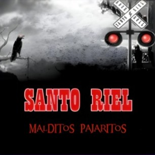
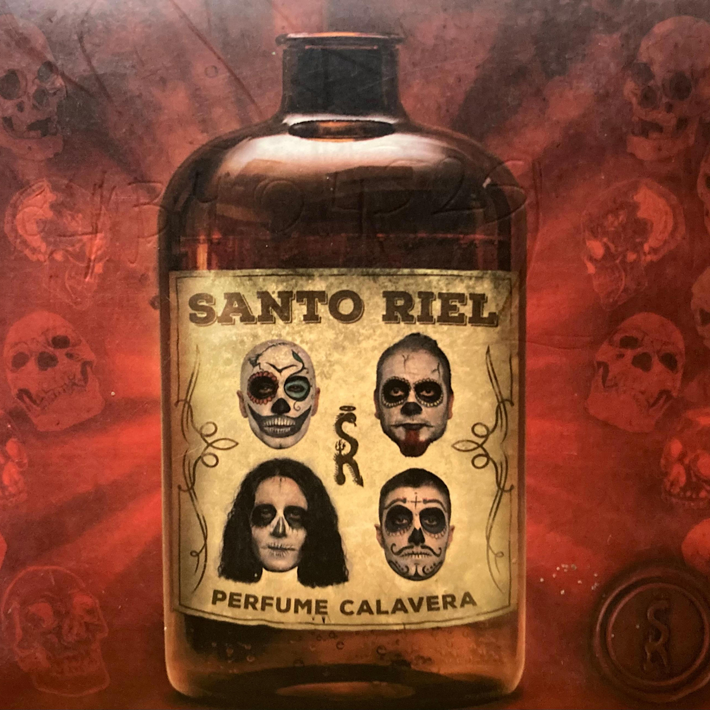

Bienvenidxs a la pagina oficial de Santo Riel
La sorpresa del oeste que esta llegando a tus oidos
Quienes somos
Santo Riel es una banda de rock nacida en zona oeste y formada en el año 2000, actualmente cuenta con dos albumes de estudio y un Dvd en vivo . Proximamente nuevos proyectos... Entre los miembros actuales se encuentras: Alejandro "El Cuervo" Casco en la voz y armonica, Gustavo "Ste" Echeverz en Guitarra y coros, Martin "Pity" Landeira en bateria y coros y Diego Moffa en el bajo.
Conoce nuestros dos discos hasta la fecha

Malditos Pajaritos (2005)
Fue el album debut de la banda (en este momento no esta disponible porque se esta remasterizando)

Perfume Calavera (2015)
El segundo album que consolidó el sonido y estilo de Santo Riel donde sorprendieron con nuevos sonidos.